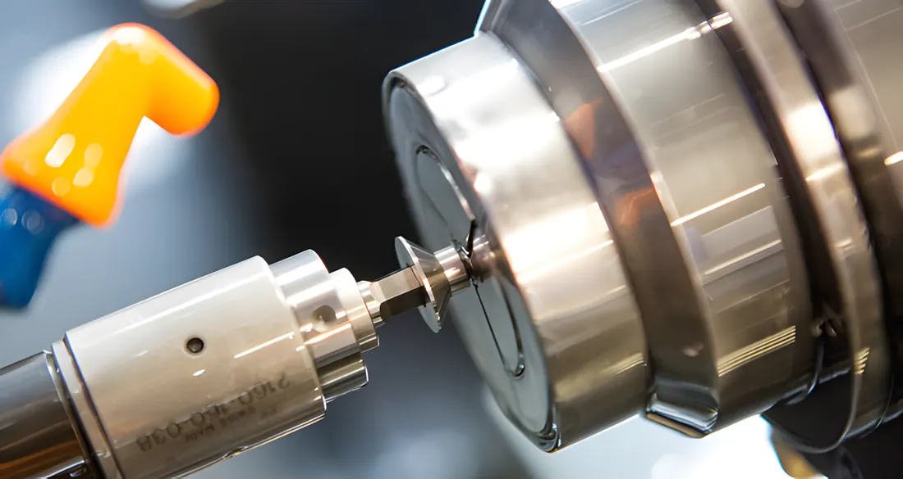

The engineering team can engage at any phase of your development, from inception to manufacture, and add value at each step. Short lead times and small batches included.
How a custom valve gets made
Three stages, the same for a single prototype or a production run.
1
Concept
It begins with discovering your challenges, needs and requirements. Team members from every functional area take part, so the project is design-ready once a quote is approved.
2
Engineer
Design for manufacturing. Designs are validated with 3D printing for fit and operation, FEA for structural concerns, and in-house fluid testing to verify performance.
3
Build
Precision manufacturing under an ISO quality system. In-house life cycle, pressure and flow testing. After machining, every part is assembled, marked and tested, 100% of them.
The stories behind the custom work
Each project builds the standard Strataflo poppet system into a custom valve.
Strataflo Defense
Strataflo supplies custom check valves to the U.S. military, each project completed within a short lead time, on budget and to the military's precise standards.
Materials include steel, stainless, aluminum and brass, often with Mil-spec coatings and plating. Parts are laser-marked per spec, even with readable 2D barcodes.
Military capabilities flyer (PDF) on strataflo.com
OEM partnerships
Decades-long relationships with OEMs in all types of industries, supplying standard and custom valves plus assemblies that make the customer's manufacturing more efficient.
One check valve was designed to fit a customer-specific mounting bracket, which eliminated installation errors. Another uses a special stainless casting with customer-specific end connections.
Global missions
With Design Outreach, a humanitarian engineering organization, Strataflo adapted its foot valve with an extra-rigid cast end for the LifePump deep well handpump, and engineered a self-closing valve for rural water standposts.
Strataflo also gives monetary and in-kind support to organizations providing clean drinking water in Africa, Haiti and South America.
Industry-wide solutions
Strataflo machined a custom profile from a standard brass check valve to fit a manufacturer's water conditioning unit, then replaced it with a valve molded from NSF-approved acetal plastic.
Two similar valves followed for other manufacturers' control valves, each with the standard Strataflo poppet system.

Ready to start your custom project?
Tell the team what the valve has to do, what it has to fit and how many you need. Prototypes and small batches are welcome.